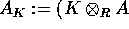
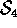
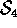

We introduce a concept of global decomposition numbers
for cellular algebras A over a principal ideal domain R. Such
algebras have been defined by Graham and Lehrer in [GL].
In the category of R-finitely generated A-modules, you always
have a set of standard resp. costandard modules, the
former of which
Graham and Lehrer called cell representations
and which we will denote by  resp.
resp.  (for the indicated connections
with quasi-hereditary algebras we refer to [KX]).
Here runs through a poset
(for the indicated connections
with quasi-hereditary algebras we refer to [KX]).
Here runs through a poset
 which comes along with the definition of A.
which comes along with the definition of A.
Now, if there is an R-algebra structure on a field K, i.e.\
a ring homomorphism from R to K, it is shown in [GL] that
there is a unique maximal )-submodule in (not necessarily
proper) and that
the corresponding nonzero simple quotients  are absolutely irreducible
and give all the irreducibles
are absolutely irreducible
and give all the irreducibles  -modules. In this situation you can
define decomposition numbers
-modules. In this situation you can
define decomposition numbers  as the
integer coefficients of
as the
integer coefficients of  in the
Grothendieck group of
in the
Grothendieck group of  with respect to the basis element
.
with respect to the basis element
.
In this paper we are going to define analogues of and
 with respect to the algebra A over the
original ground ring R, such that you can get the above described
simple modules and decomposition numbers by specialising.
As examples for
A we will treat the group algebras of
the symmetric groups
with respect to the algebra A over the
original ground ring R, such that you can get the above described
simple modules and decomposition numbers by specialising.
As examples for
A we will treat the group algebras of
the symmetric groups  and  over the ring
and  over the ring  .
In this case, the standard modules
.
In this case, the standard modules  are known as
Specht modules and the index set
are known as
Specht modules and the index set  consists of partitions
of n. It turns out that the global decomposition numbers contain
informations on the module category of , which
vanishes in all specialisations, i.e. which can not be reconstructed
from the knowledge of ordinary
decomposition numbers for all characteristics.
consists of partitions
of n. It turns out that the global decomposition numbers contain
informations on the module category of , which
vanishes in all specialisations, i.e. which can not be reconstructed
from the knowledge of ordinary
decomposition numbers for all characteristics.
This work is purely conceptual, the proofs being almost trivial. But anyway, it provides a new view and calculus for decomposition numbers. Since more information survives in this calculus, there might be a chance to understand things better.